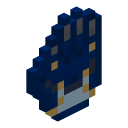

Documents v7.4 · Minecraft 1.20.1 · Forge · Palladium
Pugmeowla'sInfinity Stone Core
A Palladium mod that brings back the Infinity Gauntlet and all six Infinity Stones, rebuilt from Infinity Craft and Lucraft Core. Hunt the stones across the Overworld, the End and four alien worlds, grow each stone's skill tree, and decide whether to snap.
Jump straight to
The six Infinity Stones
 Space StonePortals, telekinesis and black holes.
Mind StoneFlight, illusions, mind reading and disguises.
Space StonePortals, telekinesis and black holes.
Mind StoneFlight, illusions, mind reading and disguises.
 Reality StoneRewrite blocks, change size, weather and visibility.
Power StoneScaling damage, beams, rockets and meteor storms.
Time StoneSpeed up, slow down or freeze the whole world.
Soul StoneSouls, the Soulworld and near-immortality.
Reality StoneRewrite blocks, change size, weather and visibility.
Power StoneScaling damage, beams, rockets and meteor storms.
Time StoneSpeed up, slow down or freeze the whole world.
Soul StoneSouls, the Soulworld and near-immortality.What's in the mod
Each stone is a Palladium power with its own skill tree. Stones work on their own when you hold them, in their containers (the Tesseract, Scepter, Aether, Orb and Eye of Agamotto), in the Curios head slot, in a Cosmi-Rod, or all together in the Infinity Gauntlet. Abilities are bought with Aspects of Existence found in Infinity Temples. With all six stones in one gauntlet you can perform the Snap, which burns your arm for a full day.
6Infinity Stones
67documented abilities
19gauntlet skins
6custom dimensions
86items & blocks
Featured
The SnapWipe out half of all life, banish every hostile mob, or destroy the stones. Everything it costs you.
Space Stone portalsOpen a portal to any dimension and coordinates, or jump to wherever you're looking.
Power levelsEleven levels that double your damage each time, up to infinite damage with all six stones.
 Crack the OrbEach world has its own secret left/right combination guarding the Power Stone.
Soul StorageCollect up to 50 souls and spend them to heal or to drain a mob's soul.
Crack the OrbEach world has its own secret left/right combination guarding the Power Stone.
Soul StorageCollect up to 50 souls and spend them to heal or to drain a mob's soul.
Space Stone portalsOpen a portal to any dimension and coordinates, or jump to wherever you're looking.
Power levelsEleven levels that double your damage each time, up to infinite damage with all six stones.
Crack the OrbEach world has its own secret left/right combination guarding the Power Stone.
Soul StorageCollect up to 50 souls and spend them to heal or to drain a mob's soul.

Custom gauntlets & skinsTurn any item or power into an Infinity Gauntlet, or add a skin, with one JSON file.Explore the wiki
 Getting StartedWhat the mod is, what you need to install, how the controls work and how a typical playthrough goes.The Infinity StonesAll six stones at a glance, how a stone's power is granted, and the abilities that need more than one stone.
Getting StartedWhat the mod is, what you need to install, how the controls work and how a typical playthrough goes.The Infinity StonesAll six stones at a glance, how a stone's power is granted, and the abilities that need more than one stone. The Infinity GauntletGetting the Infinity Gauntlet, wearing it, the stone menu and its slots, controls, tooltips and how it's drawn.
The Infinity GauntletGetting the Infinity Gauntlet, wearing it, the stone menu and its slots, controls, tooltips and how it's drawn. Item IndexEvery item and block in the mod with its ID, what it does and how to get it. Filterable, with details for each item.
Item IndexEvery item and block in the mod with its ID, what it does and how to get it. Filterable, with details for each item. StructuresEvery structure the mod generates, where it appears, how rare it is, what's inside and how to find it.
StructuresEvery structure the mod generates, where it appears, how rare it is, what's inside and how to find it. Addon DevelopmentHow to extend Infinity Stone Core with addon packs: data-driven stones, skins, gauntlets and ground items, and Palladium integration.
Addon DevelopmentHow to extend Infinity Stone Core with addon packs: data-driven stones, skins, gauntlets and ground items, and Palladium integration. Compatibility & ConfigurationRequired and optional mods, every integration the mod has, the config file, and known limitations.
Compatibility & ConfigurationRequired and optional mods, every integration the mod has, the config file, and known limitations.